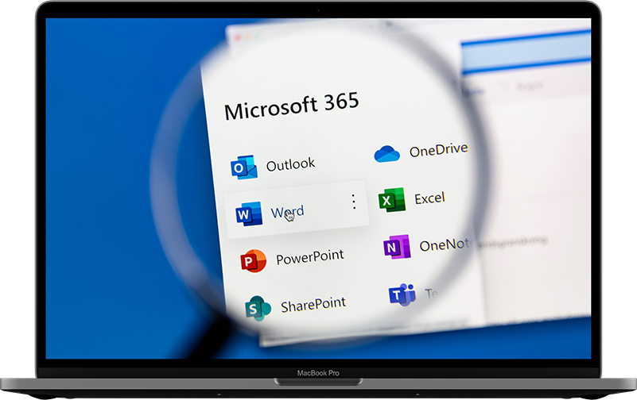

Free, Secure, and Open-Source
Backup for Microsoft 365
The #1 open-source backup tool for Microsoft 365


Start Protecting Your
Microsoft 365 Data!
Corso is Free and Open Source
Follow our quick-start guide to start protecting your business-critical Microsoft 365 data in just a few minutes.
Get Started